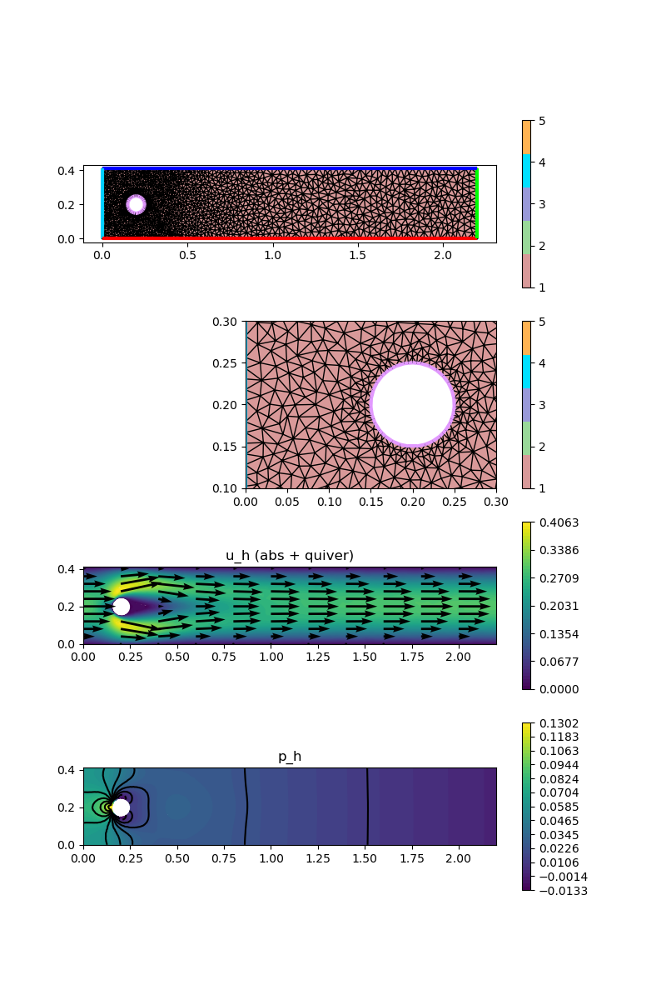

230 : Flow around a cylinder 2D
This example solves the DFG Navier-Stokes benchmark problem
\[\begin{aligned} - \mu \Delta \mathbf{u} + (\mathbf{u} \cdot \nabla) \mathbf{u} + \nabla p & = 0\\ \mathrm{div}(u) & = 0 \end{aligned}\]
on a rectangular 2D domain with a circular obstacle, see here for details.
This script demonstrates the employment of external grid generators and the computation of drag and lift coefficients.
Note: This example needs the additional packages Triangulate and SimplexGridFactory to generate the mesh.
module Example230_FlowAroundCylinder2D
using GradientRobustMultiPhysics
using Triangulate
using SimplexGridFactory
using ExtendableGrids
using GridVisualize
# inlet data for Karman vortex street example
# as in DFG benchmark 2D-1 (Re = 20, laminar)
const umax = 0.3
const umean = 2//3 * umax
const L, W, H = 0.1, 2.2, 0.41
function bnd_inlet!(result,x)
result[1] = 4*umax*x[2]*(H-x[2])/(H*H);
result[2] = 0.0;
end
const inflow = DataFunction(bnd_inlet!, [2,2]; name = "u_inflow", dependencies = "X", bonus_quadorder = 2)
# everything is wrapped in a main function
function main(; Plotter = nothing, μ = 1e-3, maxvol = 1e-3)
# load grid (see function below)
xgrid = make_grid(W,H; n = Int(ceil(sqrt(1/maxvol))), maxvol = maxvol)
# Bernardi--Raugel element + reconstruction operator
FETypes = [H1P2B{2,2}, H1P1{1}];
VeloIdentity = ReconstructionIdentity{HDIVBDM2{2}} # div-free reconstruction operator for Identity
# PDE description
Problem = PDEDescription("NSE problem (μ = $μ)")
add_unknown!(Problem; equation_name = "momentum equation", unknown_name = "u")
add_unknown!(Problem; equation_name = "incompressibility constraint", unknown_name = "p")
# add operators (Laplacian, Div-LagrangeMultierplier, Convection)
add_operator!(Problem, [1,1], LaplaceOperator(μ; store = true))
add_operator!(Problem, [1,2], LagrangeMultiplier(Divergence))
add_operator!(Problem, [1,1], ConvectionOperator(1, VeloIdentity, 2, 2; test_operator = VeloIdentity, newton = true))
# add boundary data (bregion 2 is outflow, 4 is inflow, 5 is cylinder)
add_boundarydata!(Problem, 1, [1,3,5], HomogeneousDirichletBoundary)
add_boundarydata!(Problem, 1, [4], BestapproxDirichletBoundary; data = inflow)
# inspect problem
@show Problem
# generate FESpaces and Solution vector
FES = [FESpace{FETypes[1]}(xgrid), FESpace{FETypes[2]}(xgrid; broken = true)]
Solution = FEVector(["u_h","p_h"],FES)
# solve
solve!(Solution, Problem; maxiterations = 50, target_residual = 1e-10, show_statistics = true)
# postprocess : compute drag/lift (see function below)
draglift = get_draglift(Solution, μ)
pdiff = get_pressure_difference(Solution)
println("[drag, lift] = $draglift")
println("p difference = $pdiff")
# plots via GridVisualize
p = GridVisualizer(; Plotter = Plotter, layout = (4,1), clear = true, resolution = (800,1200))
gridplot!(p[1,1],xgrid, linewidth = 1)
gridplot!(p[2,1],xgrid, linewidth = 1, xlimits = [0,0.3], ylimits = [0.1,0.3])
scalarplot!(p[3,1],xgrid,view(nodevalues(Solution[1]; abs = true),1,:), levels = 0, colorbarticks = 7)
vectorplot!(p[3,1],xgrid,evaluate(PointEvaluator(Solution[1], Identity)), spacing = [0.2,0.04], clear = false, title = "u_h (abs + quiver)")
scalarplot!(p[4,1],xgrid,view(nodevalues(Solution[2]),1,:), levels = 11, title = "p_h")
end
function get_pressure_difference(Solution::FEVector)
xgrid = Solution[2].FES.xgrid
PE = PointEvaluator(Solution[2], Identity)
CF = CellFinder(xgrid)
xref = zeros(Float64,2)
p_left = zeros(Float64,1); x1 = [0.15,0.2]
p_right = zeros(Float64,1); x2 = [0.25,0.2]
cell::Int = gFindLocal!(xref, CF, x1; icellstart = 1)
if cell == 0
cell = gFindBruteForce!(xref, CF, x1)
end
evaluate!(p_left,PE,xref,cell)
cell = gFindLocal!(xref, CF, x2; icellstart = 1)
if cell == 0
cell = gFindBruteForce!(xref, CF, x2)
end
evaluate!(p_right,PE,xref,cell)
return p_left - p_right
end
function get_draglift(Solution::FEVector, μ)
# this function is interpolated for drag/lift test function creation
function circle_bnd_testfunction(component)
function closure!(result,x)
fill!(result,0)
if sqrt((x[1] - 0.2)^2 + (x[2] - 0.2)^2) <= 0.06
result[component] = 1
end
end
end
# drag lift calcuation by testfunctions
function draglift_kernel(result, input)
# input = [ u, grad(u), p , v , grad(v)]
# [1:2, 3:6, 7 ,8:9, 10:13 ]
result[1] = μ * (input[3]*input[10] + input[4]*input[11] + input[5]*input[12] + input[6]*input[13])
result[1] += (input[1] * input[3] + input[2] * input[4]) * input[8]
result[1] += (input[1] * input[5] + input[2] * input[6]) * input[9]
result[1] -= input[7] * (input[10] + input[13])
result[1] *= -(2/(umean^2*L))
return nothing
end
draglift_action = Action(draglift_kernel, [1,13]; name = "drag/lift by testfunction", dependencies = "", bonus_quadorder = 4)
DLIntegrator = ItemIntegrator([Identity, Gradient, Identity, Identity, Gradient], draglift_action)
# test for drag
TestFunction = FEVector("drag testfunction",Solution[1].FES)
xBFaceFaces = Solution[1].FES.xgrid[BFaceFaces]
dragtest = DataFunction(circle_bnd_testfunction(1), [2,2]; name = "drag test", dependencies = "X", bonus_quadorder = 0)
interpolate!(TestFunction[1], ON_FACES, dragtest; items = xBFaceFaces)
drag = evaluate(DLIntegrator,[Solution[1],Solution[1],Solution[2],TestFunction[1],TestFunction[1]])
# test for lift
lifttest = DataFunction(circle_bnd_testfunction(2), [2,2]; name = "lift test", dependencies = "X", bonus_quadorder = 0)
interpolate!(TestFunction[1], ON_FACES, lifttest; items = xBFaceFaces)
lift = evaluate(DLIntegrator,[Solution[1],Solution[1],Solution[2],TestFunction[1],TestFunction[1]])
return [drag,lift]
end
# grid generator script using SimplexGridBuilder/Triangulate
function make_grid(W,H; n=20,maxvol=0.1)
builder=SimplexGridBuilder(Generator=Triangulate)
function circlehole!(builder, center, radius; n=20)
points=[point!(builder, center[1]+radius*sin(t),center[2]+radius*cos(t)) for t in range(0,2π,length=n)]
for i=1:n-1
facet!(builder,points[i],points[i+1])
end
facet!(builder,points[end],points[1])
holepoint!(builder,center)
end
p1=point!(builder,0,0)
p2=point!(builder,W,0)
p3=point!(builder,W,H)
p4=point!(builder,0,H)
# heuristic refinement around cylinder
refine_radius = 0.25
maxrefinefactor = 1//20
function unsuitable(x1,y1,x2,y2,x3,y3,area)
if area>maxvol*min(max(4*maxrefinefactor,abs((x1+x2+x3)/3 - 0.2)),1/maxrefinefactor)
return true
end
dist = sqrt( ( (x1+x2+x3)/3 - 0.2 )^2 + ( (y1+y2+y3)/3 - 0.2)^2) - 0.05
myarea= dist < refine_radius ? maxvol*max(maxrefinefactor,1-(refine_radius - dist)/refine_radius) : maxvol
if area>myarea
return true
else
return false
end
end
facetregion!(builder,1); facet!(builder,p1,p2)
facetregion!(builder,2); facet!(builder,p2,p3)
facetregion!(builder,3); facet!(builder,p3,p4)
facetregion!(builder,4); facet!(builder,p4,p1)
facetregion!(builder,5); circlehole!(builder, (0.2,0.2),0.05,n=n)
simplexgrid(builder,maxvolume=16*maxvol, unsuitable = unsuitable)
end
endThis page was generated using Literate.jl.
Default output:
julia> Example230_FlowAroundCylinder2D.main()
Explored path: SparsityDetection.Path(Bool[], 1)
Problem =
PDE-DESCRIPTION
===============
system name = NSE problem (μ = 0.001)
id | unknown name / equation name
[1] | u / momentum equation
[2] | p / incompressibility constraint
LHS block | PDEOperator(s)
[1,1] | 0.001 (∇u,∇v) (APT = SymmetricBilinearForm, AT = ON_CELLS, regions = [0])
| ((R(u) ⋅ ∇) u, R(v)) [Newton] [∂u] (APT = NonlinearForm, AT = ON_CELLS, regions = [0])
[1,2] | (div(v),q) (APT = BilinearForm, AT = ON_CELLS, regions = [0])
[2,1] | none
[2,2] | none
RHS block | PDEOperator(s)
[1] | none
[2] | none
BoundaryOperator[1] : BestapproxDirichletBoundary -> [4]
HomogeneousDirichletBoundary -> [1, 3, 5]
BoundaryOperator[2] :
ITERATION | LSRESIDUAL | NLRESIDUAL | TIME ASSEMBLY/SOLVE/TOTAL (s)
-----------------------------------------------------------------------
init | | 1.89e+01/5.60e-06/1.89e+01
1 | 2.515084e-17 | 1.899986e-03 | 4.29e-01/3.72e-01/8.05e-01
2 | 2.630112e-17 | 5.392003e-04 | 4.11e-01/3.49e-01/7.64e-01
3 | 2.650753e-17 | 2.926551e-05 | 3.93e-01/2.73e-01/6.70e-01
4 | 2.654304e-17 | 1.060798e-07 | 4.09e-01/2.99e-01/7.12e-01
5 | 2.688527e-17 | 1.119313e-12 | 3.99e-01/2.71e-01/6.75e-01
total | | 2.09e+01/1.56e+00/2.26e+01
[drag, lift] = [5.55827008249045, 0.010488569316219536]
p difference = [0.118654840486631]